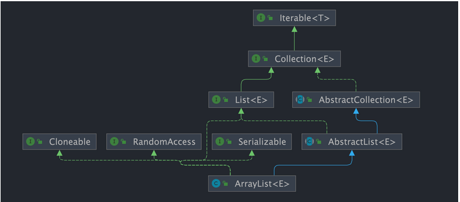

ArrayList
ArrayList是一个List的实现类。这个链表是基于数组实现的，所以它的查询效率非常的高，但是插入和删除的效率就比较低了。ArrayList是非线程安全的，如果需要线程安全的话，可以使用Vector或者是Collections.synchronizedList来进行包装。
Introduce
首先，为什么需要有ArrayList?
可能你会想，我们在Java中不是有Array了吗？为什么还需要ArrayList呢？
1 2 3 4 5 6 7 8 9 | |
我们看上面的两个声明的数组，很明显的会发现前者是需要指定数组的大小的，但是后者不需要。这就是ArrayList的优势所在，它是一个动态数组，可以根据需要进行扩容。而Array是一个静态数组，一旦声明了大小，就不能进行扩容了。
同时我们还可以明确的一点是。它既然是一个List的实现类，那么它一定有它的优势。也就是它继承了很多个接口 List , RandomAccess , Cloneable , Serializable。这就意味着它可以进行随机访问，可以进行克隆，可以进行序列化等等。
1 2 3 4 | |

源码分析
我们观察 ArrayList 的内部，会发现 transient Object[] elementData 这个数组。其实这里用了一个 transient 关键字。
-
transient关键字的作用:在编译的过程中告知编译器，这个变量不需要被序列化。也就是方便指明哪些不需要被序列化，以作区分。
我们主要围绕着 ArrayList 的扩容机制来进行分析，因为这个是和Array的最大区分。
ArrayList 构造函数
首先是了解
ArrayList的构造函数，我们能发现的是，它其实一开始是赋值了一个空数组，只有你往其中添加元素的时候，才会真的分配容量。
1 2 3 4 5 6 7 8 9 10 11 12 13 14 15 16 17 18 19 20 21 22 23 24 25 26 27 28 29 30 31 32 33 34 35 36 37 38 39 40 41 42 43 44 45 46 | |
简单的概括就是，我们在构造函数的时候，其实分为了三种情况:
- 我们直接利用无参构造函数
- 我们指定了初始容量的构造函数
- 我们利用了
Collection的构造函数，值得注意的是，我们需要检查elementData.getClass()!=Object[].class这个是因为，toArray()方法可能会返回一个不是Object[]的数组。
常见的方法
add(E e)
1 2 3 4 5 6 7 | |
- 返回值 :
boolean, 如果添加成功，返回true，否则返回false。值得注意的是很多这种方法其实都是有返回值的，不能忽略。
这里有提到一个 ensureCapacityInternal()方法
ensureCapacityInternal(int minCapacity)
1 2 3 4 5 6 7 8 9 10 11 12 13 14 15 16 17 18 19 20 21 22 23 | |
ensureCapacityInternal 方法的作用就是判断当前数组的容量和我们已经规定的默认容量是否有超出，倘若超出了的话，就会进行扩容grow().
常见问题
Q1:ArrayList 和 Vector 的区别
其实两者都是 List 的实现类，但是前者线程不安全，但是后者线程安全。
Q2: ArrayList 和 LinkedList 的区别
-
是否保证线程安全 ?
二者都是线程不安全的，如果需要线程安全的话，可以使用
Vector或者是Collections.synchronizedList来进行包装。 -
底层的数据结构
ArrayList是基于数组实现的，所以它的查询效率非常的高，但是插入和删除的效率就比较低了。LinkedList是基于双向链表实现的，所以它的插入和删除的效率非常的高，但是查询的效率就比较低了。 -
插入和删除是否受元素位置的影响：
ArrayList采用数组存储，所以插入和删除元素的时间复杂度受元素位置的影响。 比如：执行add(E e)方法的时候，ArrayList会默认在将指定的元素追加到此列表的末尾，这种情况时间复杂度就是O(1)。但是如果要在指定位置i插入和删除元素的话（add(int index, E element)），时间复杂度就为O(n)。因为在进行上述操作的时候集合中第i和第i个元素之后的(n-i)个元素都要执行向后位/向前移一位的操作。LinkedList采用链表存储，所以在头尾插入或者删除元素不受元素位置的影响（add(E e)、addFirst(E e)、addLast(E e)、removeFirst()、 removeLast()），时间复杂度为O(1)，如果是要在指定位置i插入和删除元素的话（add(int index, E element)，remove(Object o),remove(int index)）， 时间复杂度为O(n)，因为需要先移动到指定位置再插入和删除。
Q3: ArrayList 可以存放 null 吗？
可以的，因为它是一个泛型类，所以可以存放任何类型的数据。